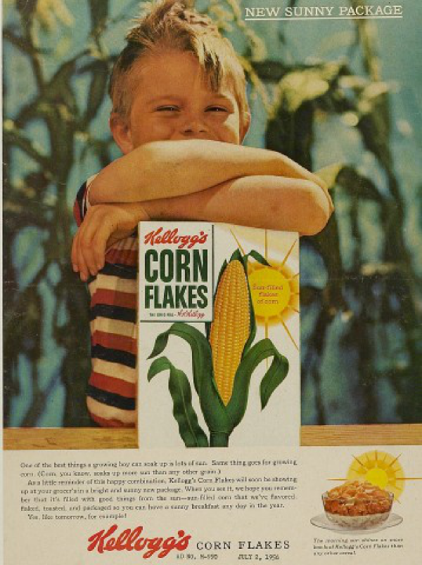
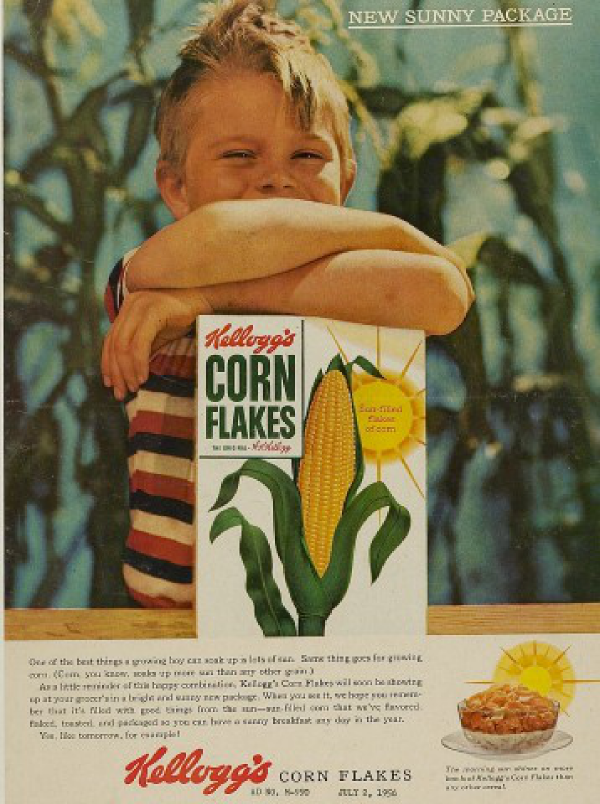

Cereal & Nutrition
Cereal & Nutrition
- 시리얼의 영양
-
John Harvey Kellogg와 Will Keith Kellogg 형제는 114년 전에 건강한 식단의 중요한 식재료 중 하나인 곡물의 가능성을 발견하고, 구운 옥수수를 플레이크 형태로 만들어 세계 최초로 아침 식사용 시리얼을 선보였습니다. 그 이래 시리얼은 건강한 식단을 위해 전세계 수많은 사람들이 즐겨 찾는 식사가 되었습니다.
- 비타민과 미네랄
-
 건강한 일상을 위하여 우리는 다양한 영양소를 골고루 섭취하는 것이 중요합니다.
건강한 일상을 위하여 우리는 다양한 영양소를 골고루 섭취하는 것이 중요합니다.
곡물의 장점을 한껏 살린 켈로그 시리얼은 다양하고 풍부한 영양소를 함유하고 있습니다. 특히 복합 탄수화물과 식이섬유가 풍부하고 지방이 적으며 주요 비타민과 미네랄의 공급도 도와줍니다.
켈로그 시리얼로 하루 동안 필요한 다양한 영양소를 보충하며 풍요롭고 건강한 일상을 즐겨보세요.
- 시리얼에 대해 당신이 몰랐던 진실 10가지
-
-

- 1. 시리얼은 여신의 이름이다? – YES
시리얼은 곡물을 의미하는 라틴어 단어 케레알리스(cerealis)에서 파생된 풍요를 상징하는 로마 추수의 여신 세레스(Ceres)에서 유래된 이름입니다. 로마 시대 동안 세레스(Ceres)의 이름은 곡물, 빵과 동의어로 쓰이기도 했다고 합니다.
- 2. 시리얼은 실수로 탄생한 음식이다? – YES
켈로그 창업자인 Will Keith Kellogg와 형인 John Harvey Kellogg 박사는 요양원에서 환자들을위한 식품을 개발하는 과정에서 롤러 압축기에 밀가루를 넣어 놓았다가 우연히 반죽이 건조되어 부서져 탄생한 얇은 밀 푸레이크를 발견했습니다. 이는 뛰어난 맛으로 환자들에게 인기가 좋았고, 시리얼이 탄생하게 된 배경이 되었습니다.
- 1. 시리얼은 여신의 이름이다? – YES
- 3. 시리얼은 튀겨서 만든다? – NO
시리얼은 천연 곡물 그대로의 맛과 향을 살리기 위해 구워서 만들어집니다. 곡물을 수확한 후 찌기, 압착하여 바삭하게 굽기, 다양한 비타민과 무기질을 첨가 후 코팅하고 건조하면 끝( 소화도 잘되고 우유와 곁들여 먹을 때 기름띠도 생기지 않아요.
- 4. 시리얼은 탄수화물 덩어리다? – NO
시리얼은 비타민, 무기질, 식이섬유, 항산화제 등 다양한 영양소를 포함하고 있습니다. 시리얼의 곡물에서 발견되는 천연 항산화 물질과 식이섬유는 전반적인 건강에 도움을 줍니다.
-

 
 - 5. 시리얼은 서양인 아침 식사다? – NO
시리얼은 한끼 식사로 충분한 맛과 영양을 골고루 갖춘 리얼 푸드로 누구든지 바쁜 일상 속에서 언제 어디서나 간편하게 즐길 수 있는 식사로 국내에서도 많은 사랑을 받고 있습니다.
- 6. 시리얼은 설탕 덩어리다? – NO
한끼에 섭취하는 시리얼에 들어있는 당류는 8~10g 내외로 1일 영양 성분 기준치의 8% 정도입니다. 오렌지 주스 한 컵에 포함된 당류는 20g, 요구르트는 40g이 넘는 점과 비교해보세요.
- 7. 시리얼은 성의 없는 차가운 음식이다? – NO
시리얼을 따뜻하게 먹으면 뜨겁게 조리한 평상 시 식사와 더 유사해 든든한 한끼를 먹은 듯한 포만감과 만족감을 느낄 수 있고 부드러운 식감과 색다른 맛도 느낄 수 있습니다. 특히 그래놀라는 따뜻한 우유와 함께 먹으면 한 끼 식사로 손색없는 맛과 영양을 느낄 수 있습니다.
-

- 8. 시리얼에 우유보다 많은 비타민D가 들어있다? – YES
같은 양의 시리얼과 우유를 비교해보면 시리얼에 더 많은 비타민D가 함유되어 있습니다. 비타민D가 함유된 음식 중에 가장 간편하게 먹을 수 있는 우유의 경우 100g당 약1µg, 버터는 약1µg이 함유된데 반해 시리얼의 경우(켈로그 콘프로스트 기준) 8.3µg가 함유되어 있습니다.
- 9. 시리얼은 어린이용 간식이다? – NO
시리얼은 요양원에 있는 환자들의 건강식 대용으로 만들어졌습니다. 지방은 적고 다양한 비타민과 무기질을 함유하고 있으며, 콜레스테롤이 없어 균형 잡힌 한끼 식사로 영양학적인 설계가 잘 되어 있는 음식입니다.
- 10. 시리얼은 운동 전/후에 먹으면 좋다? – YES
운동을 하기 전 지방이 적고 단백질이 낮은 풍부한 탄수화물을 섭취하는 것은 운동 중 지구력 운동 수행 능력을 향상시켜줍니다. 운동 후 근육 생성을 위해서는 단백질과 적절한 양의 탄수화물을 함께 섭취해 주는 것이 효과적입니다. 일반적인 시리얼은 운동 전, 단백질 함량이 강화된 시리얼은 운동 후 섭취하게 되면 일반인들도 쉽게 필요한 영양소를 섭취할 수 있습니다.
-